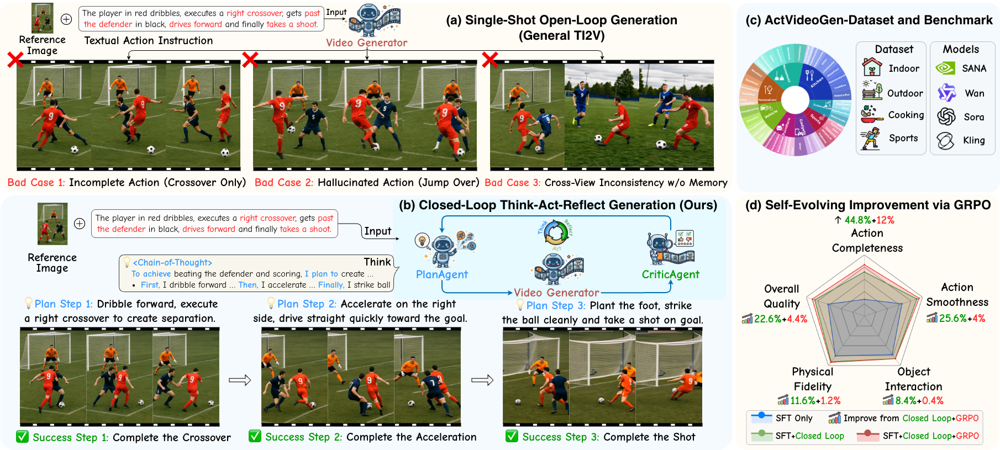
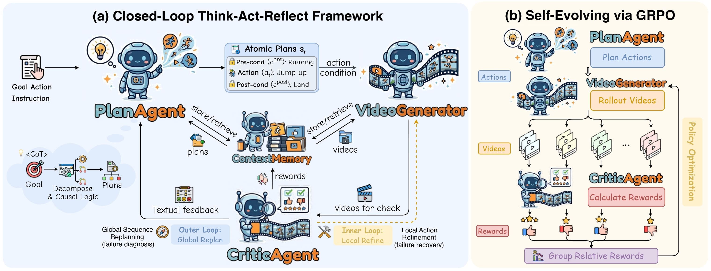
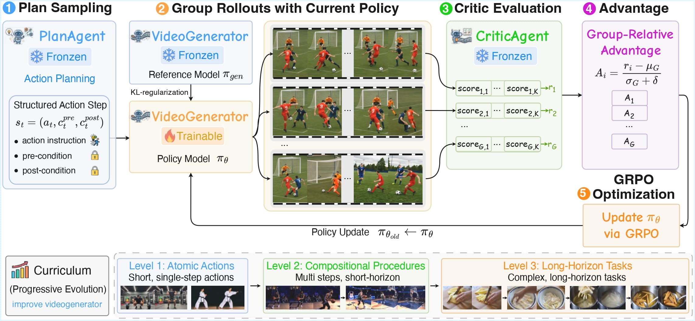

PlanAgent
Decomposes a high-level goal and visual context into ordered, object-centric action plans with explicit pre-conditions and post-conditions for each generation step.

Long-Horizon Action-Conditioned Video Generation: Challenges and Solution. (a) General TI2V is single-shot and open-loop, often causing incomplete actions and hallucinated motions. (b) We propose a closed-loop think-act-reflect framework for iterative planning, generation, and verification. (c) We introduce the ActVideoGen-Dataset and Benchmark for task-specific experiments. (d) Our closed-loop design enables self-evolving, continually improving video generation quality.

SPIRAL Overview. (a) Closed-Loop Framework: PlanAgent decomposes abstract goals into atomic plans for action-conditioned video generation, CriticAgent evaluates videos and triggers dual-level inner/outer refinement feedback. (b) Self-Evolving via GRPO: guided by PlanAgent, VideoGenerator produces rollouts and is optimized using CriticAgent rewards.
Decomposes a high-level goal and visual context into ordered, object-centric action plans with explicit pre-conditions and post-conditions for each generation step.
Synthesizes each video segment from the current sub-action and accumulated context, enabling long-horizon generation through step-wise controllable execution.
Evaluates action-video alignment, detects local failures or global drift, and returns feedback that triggers refinement, regeneration, or replanning.

Training-Time Self-Evolving via GRPO. PlanAgent samples action steps, VideoGenerator produces group rollouts, and CriticAgent assigns rewards for GRPO-based policy optimization. A curriculum gradually increases task complexity from atomic actions to long-horizon procedures, enabling VideoGenerator to internalize planning and verification signals for progressive-evolution.
A side-by-side view of the agentic execution process and the final long-horizon video.
End-to-end pipeline of SPIRAL. Given a user goal, PlanAgent decomposes the task into step-wise actions, VideoGenerator synthesizes each segment, and CriticAgent verifies alignment before final long-horizon composition.
A side-by-side view of CriticAgent-triggered local refinement and the corrected video result.
Closed-loop feedback refinement. CriticAgent detects local failures, SPIRAL refines the action instruction, regenerates a corrected segment, and continues the procedure without propagating errors.
Step 1: Open the Back Cover→Step 2: Insert the RAM (Physical Violation)
Step 1: Open the Back Cover→Step 2: Insert the RAM
Step 1: Remove the Gas Cap→Step 2: Insert the Fuel Nozzle (Missing Action)
Step 1: Remove the Gas Cap→Step 2: Insert the Fuel Nozzle
Step 1: Rinse with Water→Step 2: Dry with a Towel (Incomplete Action)
Step 1: Rinse with Water→Step 2: Dry with a Towel
Step 1: Wash the Onion→Step 2: Wash the Green Pepper (Sudden Switch)
Step 1: Wash the Onion→Step 2: Wash the Green Pepper
Step 1: Pour in Hot Tea (Physical Violation)→Step 2: Pour in Milk (Sudden Switch)
Step 1: Pour in Hot Tea→Step 2: Pour in Milk
Step 1: Show a Blank Piece of Paper→Step 2: Fold the Paper to Produce Money (Sudden Switch)
Step 1: Show a Blank Piece of Paper→Step 2: Fold the Paper to Produce Money
Step 1: Pull the Safety Pin (Physical Violation)→Step 2: Spray the fire
Step 1: Pull the Safety Pin→Step 2: Spray the fire
Step 1: Spray Cleaner→Step 2: Wipe with a Cloth (Physical Violation)
Step 1: Spray Cleaner→Step 2: Wipe with a Cloth
Step 1: Open the Refrigerator→Step 2: Take Out Tomatoes→Step 3: Wash the Tomatoes (Physical Violation)→Step 4: Cut the Tomatoes (Physical Violation)→Step 5: Seal in a Bag (Incomplete Action)
Step 1: Open the Refrigerator→Step 2: Take Out Tomatoes→Step 3: Close the Right Door→Step 4: Close the Left Door→Step 5: Place on the Cutting Board→Step 6: Wash the Tomatoes→Step 7: Cut the Tomatoes→Step 8: Seal in a Bag
Step 1: Slice Tomatoes & Cucumbers (Missing Actions)→Step 2: Place Tomatoes & Cucumbers in Bowl (Incomplete Action)→Step 3: Get and Pour Salad Dressing (Physical Violation)
Step 1: Slice Cucumbers→Step 2: Place Cucumbers in Plate→Step 3: Slice Tomatoes→Step 4: Get Salad Bowl→Step 5: Place Tomatoes in Bowl→Step 6: Place Cucumbers in Bowl→Step 7: Get Salad Dressing→Step 8: Pour the Dressing→Step 9: Toss with Spoon
@article{yang2026spiral,
title = {SPIRAL: Self-Evolving Action-Conditioned Video Generation via Reflective Planning Agents},
author = {Yang, Yu and Liao, Yue and Mei, Jianbiao and Wang, Baisen and Yang, Xuemeng and Wen, Licheng and Zhang, Jiangning and Li, Xiangtai and Lv, Liang and Chen, Hanlin and Shi, Botian and Liu, Yong and Yan, Shuicheng and Lee, Gim Hee},
journal = {arXiv preprint arXiv:2603.08403},
year = {2026}
}